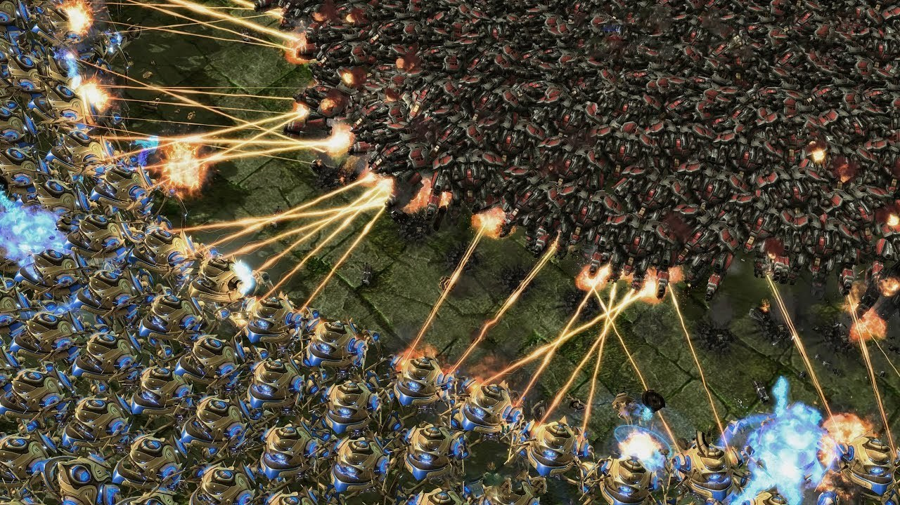

Хочу поделиться своим опытом разработки крупных игровых проектов на C++, где производительность и стабильность - это не просто приятные бонусы, а абсолютно естественные требования к разработке. За годы работы над движками и играми я понял, что подход к управлению памятью очень сильно влияет на весь проект. В отличие от многих приложений - игры, особенно большие, часто работают часами без прерываний и должны поддерживать стабильный фреймрейт и отзывчивость. Когда проседание fps или фриз происходит на глазах у сотен тысяч игроков, вам уже никто не поможет, но ущерб уже нанесен, а в steam полетели отзывы о кривизне рук разработчиков.
Однажды моя команда закончила работу над довольно интересным проектом, который портировали больше двух лет на плойку. Движок старый, большой и мощный, но работа с памятью была ориентирована на ПК времен конца 2000-х, и что меня поразило, так это насколько сильно большая часть кодовой базы зависела от динамической памяти во время выполнения. На ограниченном железе (далеко не у всех есть PS5 pro) и в условиях жёстких требований к сертификации на консолях такие решения быстро превращаются в проблему.
В разработке для консолей (про мобильные устройства я молчу, потому что игра не влезает по памяти даже в восемь гигов) с ограниченными ресурсами, архитектура с частыми аллокациями не просто неэффективна и она становится реальной угрозой для стабильности проекта. Каждое выделение памяти в куче влечёт за собой накладные расходы: это дополнительные !миллисекунды! (в целом на кадре) задержки, риск большой фрагментации памяти, и непредсказуемое поведение в долгой игровой сессии. После двух часов игры постоянные операции с кучей буквально «сжигают» половину бюджета кадра.

Динамическая память и проблемы в разработке игр
В играх и игровых движках, особенно на консолях и мобильных устройствах, управление памятью должно быть максимально предсказуемым. Это значит:
никакой неожиданной задержки из-за фрагментации кучи;
никакого риска падения fps из-за нехватки памяти в разгаре боя или на важной сцене;
никакого постепенного ухудшения производительности во время игры;
никаких ошибок выделения памяти, которые могут сорвать катку или вызвать вылет у игроков.
В отличие от десктопных приложений, где пользователь может «перезапустить» программу и продолжить что-то делать - игра должна стабильно работать на ограниченном железе с фиксированным объёмом памяти. Если память заканчивается, а она физически заканчивается — игра крашится. В условиях консоли или мобильного устройства это не теоретическая угроза, а практическая реальность, которая напрямую влияет на опыт тысяч игроков.
Консоль | Общий объем | Доступно для игры | Особенности архитектуры |
PlayStation 5 | 16 Gb GDDR6 | 12.5-13 Gb | Единая архитектура |
Xbox Series X | 16 Gb GDDR6 | ~11.5 Gb | 10 Gb высокоскоростной |
Xbox Series S | 10 Gb GDDR6 | ~7 Gb | 8 Gb высокоскоростной |
Скрытые издержки динамической памяти
Мои замеры показывают, что время выделения памяти в куче деградирует при длительной (порядка трех часов) игре в 2–5 раз на xbox и 2-3 раза на playstation5, напрямую влияя на производительность игры. На мобильниках такие длинные сессии редкость, но там фрагментация со временем может «съедать» до 30% доступной памяти в длинных (более получаса) игровых сессиях, что для платформ с ограниченными ресурсами это означает не только падение FPS, но и фактические вылеты по ООМ.
Это конечно мелочь, но разные реализации malloc добавляют 24–64 байт накладных расходов на каждое выделение для служебной информации. И если в игре, где за кадр происходят тысячи мелких аллокаций, я не ошибся - тысячи за кадр (например, при создании объектов или эффектов), этот оверхед сам по себе занимает какую-то часть памяти.
Аллокатор | Примерный объём служебных данных на одно выделение | Комментарии |
|---|---|---|
glibc malloc | 16-24 байт | Хранит размер блока + флаги + указатели/связи в списках свободных блоков |
jemalloc | “отдельно от блоков”, но накладные расходы всё равно есть — несколько байт за блок, и дополнительная структура | накладные расходы зависят от размера выделения и класса. |
TCMalloc | 32+ байт / класс — зависит от „size-class“ + кеша потоков + страниц | дополнительные расходы на данные о кешах потоков, управления “size-classes”, накладные расходы выше для мелких аллокаций. |
Windows/Xbox | 48+(debug) / 30+ байт (релиз) | Зависит от версии OS, режима (отладочный / релизный) и архитектуры |
PlayStation | минимально 12 байт (размер + урезанный указатель на следующий блок + флаги) | Нет точной цифры, зависит от версии SDK. |
А насыпьте мне кода без кучи...
Я, как и многие мои знакомые из мира игростроя, считаю, что современные возможности языка стали слишком «тяжелые» или лишними для разработки игр, но весь это вкусный сахар, тем не менее позволяет писать физически меньше кода. Можно успешно использовать лямбды, RAII, статический полиморфизм и даже еще не полностью изученные возможности C++23 для создания игр, не отказываться от современных инструментов, а применять их разумно. И, конечно, надо понимать ограничения наших систем и использовать только те возможности языка, которые не нарушают требований к производительности и предсказуемости.
В какой-то момент команда пришла к пониманию, что нужны аналоги привычных STL-контейнеров, но с фиксированным размером. Например, gtl::vector<T, N> у нас работает точно так же, как std::vector<T>, но может содержать максимум N элементов. Это означает, что вся память для элементов выделяется в момент создания объекта, а не динамически при добавлении элементов. Но лень, старые привычки и реактивность мозга не дают возможности писать сразу без ошибок, а ведь такой подход сулит множество преимуществ для разработки. Во-первых, размер контейнера известен на этапе компиляции, что позволяет статически анализировать потребление памяти. Во-вторых, операции добавления и удаления элементов выполняются за предсказуемое время, поскольку не требуют обращений к системе управления памятью. Это важно для понимания куда уходит время на кадре, а еще можно рисовать красивые презентации начальству, как мы тут боремся за перф.
Стандартный std::function в C++ использует динамическое выделение памяти для хранения больших объектов, что вообще неприемлемо для игр, когда каждый второй обработчик начинает использовать лямбду, обернутую в функтор. Есть несколько библиотек, которые решают эту проблему, например библитека FastDelegate (Don Clugston), написанная лет двадцать назад (ссылка), но не утратившая своей актуальности или реализация функторов от ETL (ссылка)etl::function<Signature, StorageSize>, где используется буфер для хранения функционального объекта, в самом функторе, и еще как минимум пара хороших библиотек на гитхабе. Это позволяет использовать все преимущества функционального программирования - лямбда-выражения, функторы, указатели на функции — без риска неконтролируемого выделения памяти. Т.е. мы сами определяем максимальный размер функционального объекта, и если он превышает заданный лимит, компилятор просто выдаст ошибку. Теперь частенько мой код выглядит вот так:
// <<<< std::vector<int>
gtl::vector<int, 64> _unit_options;
// <<<< std::function<void()>
gtl::function<void(), 32> _unit_death_cb;Если программист пытается добавить элемент в уже заполненный контейнер или сохранить слишком большой функциональный объект, код просто не скомпилируется и это намного лучше, чем получить ошибки в рантайме. Такой подход позволяет выявить потенциальные проблемы еще до того, как программа попадет к игроку, а статический анализ кода становится более эффективным, поскольку компилятор может точно определить максимальное потребление памяти.
... и добавьте немного CRTP
В традиционном ООП на плюсах мы часто используем виртуальные функции для достижения полиморфизма. Когда у нас есть базовый класс с виртуальными методами и несколько наследников. Это обычный подход, мы перекладываем часть работы на компилятор, который создает специальную таблицу виртуальных функций (vtable). При вызове метода программа сначала обращается к этой таблице, чтобы определить, какую именно функцию нужно вызвать.
Этот механизм создает несколько проблем, и хоть они уже не столь критичны, как это было десять-пятнадцать лет назад, сами-то проблемы никуда не ушли, просто процессоры стали быстрее. Во-первых, каждый вызов виртуальной функции требует дополнительного обращения к памяти для получения настоящего адреса функции в таблице, что замедляет выполнение, условно замедляет, потому что проц быстрый.
Во-вторых, для полиморфных объектов обычно требуется динамическое выделение памяти, поскольку размер объекта неизвестен на этапе компиляции. И если раньше разработчики игр практически всегда отключали rtti, то сейчас это норма, плюс нам пришлось его включить, когда мы начали использовать новую библиотеку для пользовательского интерфейса (WPFG) и её код стал пролезать по всей игре. В-третьих, виртуальные деструкторы усложняют управление памятью и могут привести к непредсказуемому поведению, но это отдельный случай.
Кто этот ваш CRTP вообще такой? CRTP - это паттерн программирования, при котором класс наследуется от шаблонного базового класса, передавая самого себя в качестве параметра шаблона.
Звучит сложно, но на практике это очень элегантное решение. Например: class Derived : public Base<Derived>. Базовый класс может вызывать методы производного класса через static_cast, при этом все вызовы разрешаются на этапе компиляции. Идеально подходит когда мы знаем все возможные типы на этапе компиляции и хотим избавиться от вызова виртуальных функций. CRTP позволяет создавать шаблоны функций и классов, которые работают с любыми типами, реализующими определенный интерфейс, но без накладных расходов виртуальных функций.
template <typename Derived>
class GameObject {
public:
void update() {
// Вызываем метод из производного класса через static_cast
static_cast<Derived*>(this)->updateImpl();
}
void render() {
static_cast<Derived*>(this)->renderImpl();
}
};
class Player : public GameObject<Player> {
public:
void updateImpl() {
// Логика обновления игрока
// "Updating Player position and state\n";
}
void renderImpl() {
// "Rendering Player on screen\n";
}
};... а еще посыпьте статическим полиморфизмом
Альтернативный подход — через рантайм полиморфизм с использованием std::variant, при котором выбор конкретной реализации метода происходит на этапе компиляции, а не во время выполнения программы. Компилятор заранее знает, какую функцию нужно вызвать, и генерирует прямой вызов без промежуточных обращений к таблицам или указателям, что полностью устраняет накладные расходы времени выполнения, связанные с полиморфизмом. Все работает так же быстро, как если бы вы напрямую вызывали нужную функцию, и при этом код остается гибким и расширяемым — можно легко добавлять новые типы и реализации без изменения существующего кода. Я уже частично рассматривал эту тему в Game++. Heap? Less
struct ButtonEvent {
int button_id;
void process() {} // "Обработка нажатия кнопки "
};
struct TimerEvent {
int timer_id;
void process() {} // "Обработка таймера"
};
struct NetworkEvent {
std::string message;
void process() {} // "Обработка сетевого события"
};
using Event = std::variant<ButtonEvent, TimerEvent, NetworkEvent>;
// Универсальный обработчик событий
struct EventProcessor {
template<typename T>
void operator()(T& event) const {
event.process();
}
};
Event e1 = ButtonEvent{42};
Event e2 = TimerEvent{7};
Event e3 = NetworkEvent{"Hello"};
std::visit(EventProcessor{}, e1);
std::visit(EventProcessor{}, e2);
std::visit(EventProcessor{}, e3);... да промаринуйте в placement new и пулах
А еще часто нужно быстро создавать и уничтожать множество объектов — снаряды, эффекты, частицы, веревки и декали. Но вместо использования обычной динамической памяти будем применять статические пулы, что позволит перераспределять объекты без накладных расходов new/delete и фрагментации памяти, что особенно важно на консолях и мобильных устройствах.
gtl::pool<Projectile, 64> projectile_pool;
auto* proj = projectile_pool.allocate();
// Настраиваем и используем снаряд
proj->velocity = . . .;
proj->damage = . . .;
projectile_pool.deallocate(proj);Или иногда важно точно контролировать порядок и время инициализации объектов, похоже на пул, но не пул. Представьте что такой подход можно использовать для стартап аллокаций и создавать уникальные для игры объекты — конфиги, системы, менеджеры рендера, звука и т.д.
alignas(GameConfig) char _gameConfigStorage[sizeof(GameConfig)];
GameConfig* config = new(_gameConfigStorage) GameConfig();
GameConfig->load_from_file({. . .});
// После использования вызываем деструктор вручную
// или не вызываем вообще, потому что это объект уровня жизни всей игры
GameConfig->~GameConfig();
template<typename T>
class GameResource {
alignas(T) mutable uint8_t _data[sizeof(T)];
mutable T* _instance = nullptr;
public:
template<typename... Args>
T& init(Args&&... args) const
{
if (_instance) {
_instance->~T();
}
_instance = new (_data) T(std::forward<Args>(args)...);
return *instance;
}
void destroy() const {
if (_instance) {
_instance->~T();
_instance = nullptr;
}
}
T& ref() const {
assert(_instance);
return *_instance;
}
};
GameResource<GameConfig> g_config;
void Game::Init() {
. . .
g_config.init({100});
. . .
}... и отправьте на сертификацию
Одна из главных причин почему мы вдруг стали так пристально следить за использованием памяти — жалобы со стороны новых игроков и, внезапно, отказ в сертификации на тестах, что знаете ли не очень приятно и порождает резонные вопросы у руководства компании.
На этапе сертификации тестовая лаборатория вендора зафиксировала низкий фпс, коррапшены в памяти и деградацию производительности — ага, а мы думали, они там просто в билд играют, и отказала в одобрении игры для публикации. Это стало неприятным сюрпризом для всей команды и пришлось пересматривать архитектуру памяти, использовать фиксированные аллокаторы и практически полностью избавляться от динамических выделений памяти. От всех, конечно, не избавились, но сейчас на кадре остались сотни аллокаций в главном потоке, а было их, чего уж греха таить, на порядок больше.
Почему продавец хотдогов никогда сам их не ест?
В моем случае — продавец хотдогов ест их сам и вынужден кормить ими всю команду, но мышки плачут и жалуются:) Используя C++, не стоит «принимать» использование кучи как данность — можно и нужно строить архитектуру так, чтобы не использовать динамическое выделение памяти во время выполнения. Плюсы все еще позволяют пользоваться преимуществами новых стандартов — лямбдами, RAII, шаблонами и даже новыми функциями C++23 — при этом сохраняя предсказуемость работы системы.
Правильный подход к архитектуре позволяет создавать надёжный код без жертв производительности. Работа без кучи не ограничивает возможности, а наоборот заставляет писать более чистый, предсказуемый и устойчивый код. У нас тут в игрострое предсказуемость очень часто важнее гибкости, поэтому проектируя свою систему, нужно заранее продумывать, где и как будет использоваться память.
Несмотря на очевидные технические преимущества, графики перфа, внутренние презентации, менторство — внедрение всего вышеописанного в реальных проектах часто сталкивается с сопротивлением команды. Многие привыкли к классическому ооп‑крестописанию с виртуальными функциями, наследованием и сахарным сахаром, который кажется им более интуитивным и понятным. Нескучное программирование требуют другого способа мышления о коде — нужно думать о типах, применении, шаблонной магии и вариантах объединения. И да, синтаксис становится более сложным, что поначалу может пугать и отталкивать.
К сожалению, практика показывает, что при первых же трудностях или дедлайнах команда быстро откатывается к знакомым привычкам. «Давайте лучше сделаем обычный интерфейс с виртуальными методами — это быстрее и все понимают» — не раз виденная автором реакция под давлением сроков.
Особенно сложно приживается подход в командах с большой текучкой кадров или аутсорсерами, которые не готовы тратить время на изучение кодстайла студии. В результате код превращается в смешение стилей, что создает техническую неоднородность и в целом усложняет дальнейшее сопровождение проекта.
Мне интересно услышать мнение Хабражителей и разработчиков на C++ — кто из вас строит проекты без кучи? Какие приёмы и стратегии помогли вам сохранить читаемость и понимаемость кода, не жертвую современными возможностями языка? Сталкивались ли вы с необходимостью убеждать команду в использовании таких практик?
P. S. Телегу рекламировать не буду, её у меня просто нет:)
P.P.S Приходите на вебинар про оптимизацию в GameDev! Расскажу про кастомные аллокаторы, а еще обсудим с коллегами из игростроя и PVS‑Studio практические советы по улучшению проектов и способах ускорить запуск мобильных игр.
25 сентября в 16:00 (MSK)
https://pvs‑studio.ru/ru/webinar